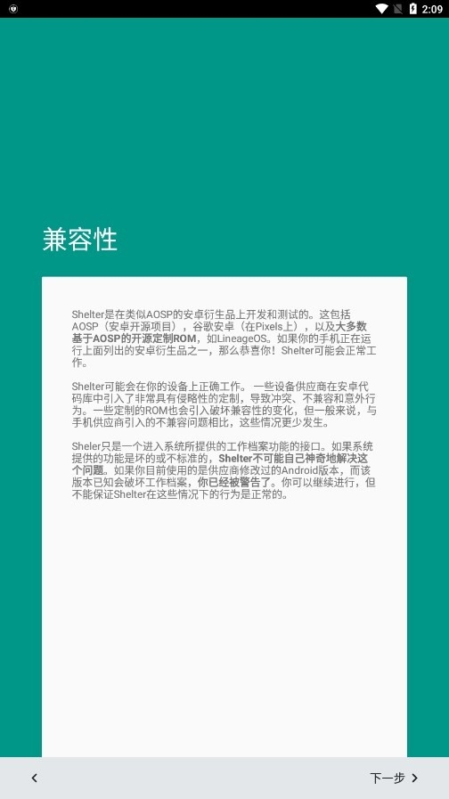

Shelter 踩坑实录：隔离空间看着简单，这几个地方真会翻车
把银行应用丢进隔离区后闪退、克隆半天失败、冻结完找不到应用图标——四个真实踩过的坑，逐个拆解原因和解法，帮你把 Shelter 用顺。
我第一次装 Shelter 是冲着它那句"开源、无广告、用系统级工作资料做隔离"去的，在它的官网上一眼就看中了这个定位。安装向导五分钟走完，主界面一目了然——左边 MAIN 右边 SHELTER，看起来就像给手机装了个文件夹。
然后坑就来了。
第一个坑是在装完银行应用之后。那次我想当然地把手机上所有 App 都克隆进了隔离区，图个清爽。结果第二天早上起来，银行 App 点进去就是白屏，再过一会儿直接闪退。我以为是版本问题，卸载重装了三次，还清了缓存，折腾了快四十分钟才反应过来——不是 App 坏了，是它在检测运行环境。
金融类应用对运行环境的敏感度比想象中高得多。银行、支付类的程序会检查设备上是否存在工作资料——这在它们的风控模型里属于"环境异常"信号，轻则限制功能，重则直接拒绝启动。我那次就是把银行应用克隆进去后，它发现自己跑在一个"档案管理员"管的隔离空间里，二话不说就罢工了。
解决办法其实很简单：银行、支付这类你信得过的应用，老老实实放在主空间。隔离空间本来就是给"不太信得过的 App"准备的——来路不明的工具、海外版社交应用、会偷数据的免费 VPN，这些才是它该管的对象。把不该隔离的放进去，反而给自己添乱。
克隆失败：到底是哪一步卡住了
第二个坑是克隆。某次我装完一个新出的社交 App，按惯例点克隆，结果进度条走了一半卡在那里，等了十分钟不动。我以为手机卡死了，强制重启，再打开 Shelter 发现克隆出来的 App 图标是灰色的，点不动也删不掉。
后来才搞清楚，克隆失败常见几个原因：一是目标应用本身在启动时就有防多开逻辑，克隆后它自己检测到有另一份实例就拒绝运行；二是系统版本和应用的 targetSdkVersion 不兼容，Android 14、15 上这个问题比 12、13 多；三是隔离空间的存储配额快满了——这一条最容易被忽略，我那次就是因为前一天装了七八个应用把隔离空间撑爆了。
解法按优先级排：先看隔离空间剩余空间够不够，不够就删几个冻结的应用或用文件穿梭把大文件备份出去；然后检查目标 App 有没有防克隆的特殊逻辑，这种只能换个版本或者直接放弃；最后不行就卸载克隆出的那个灰色图标，回到主空间卸载原版再重新克隆一次——Shelter 的界面里长按灰色图标一般能调出卸载选项。实在不行就去官方下载拿最新版重新装，有时候版本差异也会影响克隆行为。
通知消失：我以为 App 死了
第三个坑是通知。隔离空间里的应用锁屏自动冻结之后，第二天解锁发现十几个通知红点没了。我以为是 App 崩溃了，点进去一看好好的，就是通知不出来。
这里要搞清楚冻结的机制：冻结之后 App 进程被彻底杀掉，后台也跑不起来，自然没法推送通知。如果你用了自动冻结服务——锁屏即冻结——那每天早上解锁之后，隔离空间里的所有应用都得手动点一下才能重新活过来，之前冻结期间的通知是收不到的。
这不是 bug，是 Shelter 的设计取舍。如果你确实需要某些应用的实时通知，要么把它们从自动冻结列表里排除，要么干脆别放进隔离空间。我后来的做法是：社交工具保留在隔离空间但关掉自动冻结，锁屏时用一键暂停整个空间替代——这样进程不被杀，通知照收，暂停的目的就是防止锁屏后有人手滑点开。遇到通知彻底失联的情况，可以去shelter文档里找通知排查思路，比自己瞎试省时间。

文件穿梭：为什么我看不到两个空间
第四个坑是文件穿梭。Shelter 的文件穿梭功能默认是关掉的，要自己去设置里开。我第一次开的时候，系统引导走完，回到文件管理器一看——还是只有主空间那几个文件夹，隔离空间的入口根本没出现。
排查了半天，原因有三个。第一，Google Play 版的 Shelter 根本没有文件穿梭这个功能——我那次刚好装的是 Play 版，白忙活了一场。第二，有些国产 ROM 把系统文件管理器替换掉了，文件穿梭依赖的系统组件跟第三方文件管理器不兼容，换回原生的"文件"应用就正常了。第三，有时候开关状态会被系统重置，回 Shelter 设置里确认一下 File Shuttle 是不是真的开着，关掉再开一次重走引导流程。
文件穿梭打通的只有文件这一层，两个空间的应用数据不会互通。所以聊天记录、应用缓存这些它传不了，只能传你主动选中的图片、文档、安装包。把它当跨空间的文件传输管道用，别指望它帮你做数据备份。
防坑清单
踩完这四个坑之后，我总结了几条每次更新 Shelter 都要过一遍的检查项：
- 金融类应用一律放主空间：银行、支付、证券——凡是有强风控的，别碰隔离区。
- 克隆前先看隔离空间剩余存储：剩个几百 MB 就该清了，克隆失败大概率是空间不够。
- 需要通知的应用别开自动冻结：关掉自动冻结服务，改用一键暂停手动关灯。
- 文件穿梭要 F-Droid 版才稳：别装 Google Play 版，缺功能还查半天原因。
- 国产 ROM 上遇到怪问题先关文件管理器：换回系统自带的"文件"应用再试。
知道这些坑之后，Shelter 其实相当省心。隔离空间把我手机里乱七八糟的应用都归置进去了，主空间干干净净只有每天必须用的那几个。踩过的坑其实都有现成解法，只是第一次遇到的时候容易慌。
更多细节可以翻文档，设置向导里关于权限和兼容性的说明也值得慢读一遍——那段写得很实在，没有藏着掖着。
这套资料我同时同步到了 GitHub、Gitee 和 GitCode 三个仓库，GitHub 为主，国内访问可以直接走 Gitee 或 GitCode，都在 APK 仓库的官网版目录下。